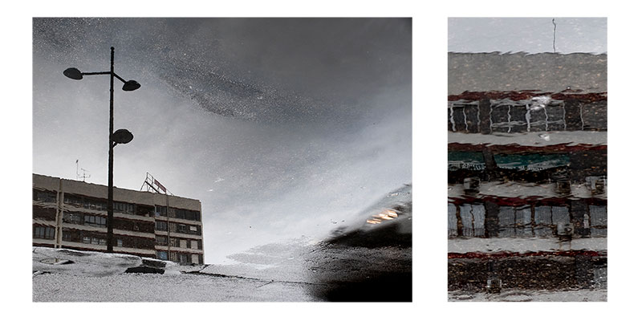
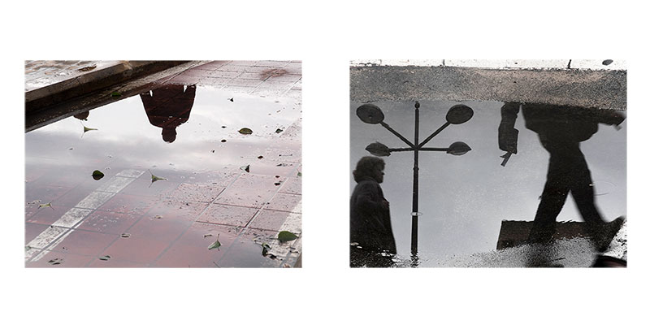
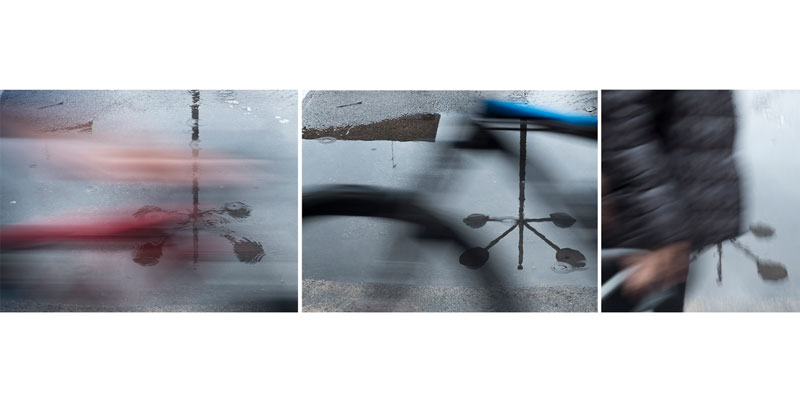
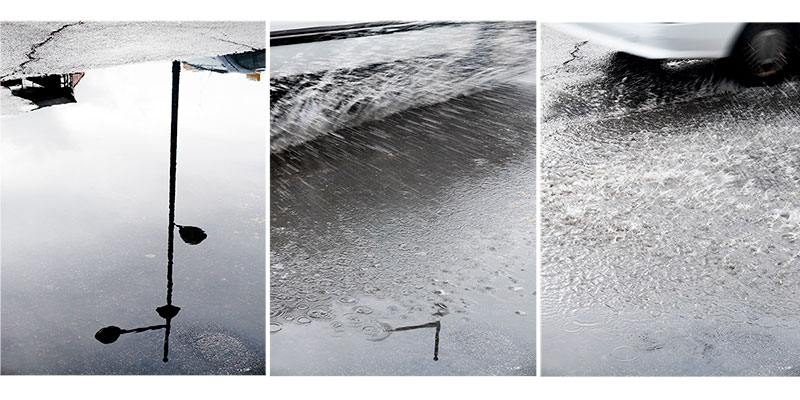

Es una visión “paralela” que te adentra en una ciudad diferente, llena de espejos, donde aparecen nuevas situaciones y personajes con los que dejar volar tu imaginación. Hablamos de Valencia tras las lluvia, mi ciudad.
En Another World lo cotidiano se vuelve ambiguo e incluso un tanto extraño en ocasiones.



